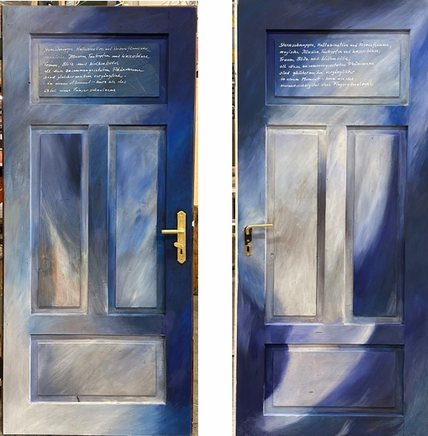
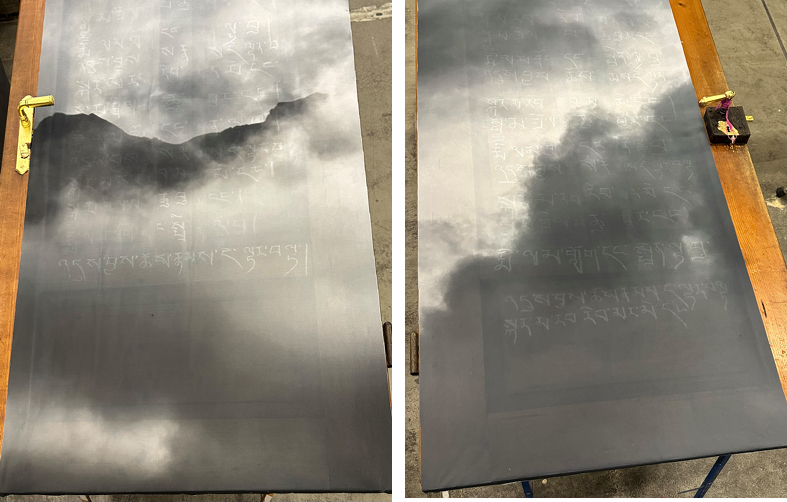
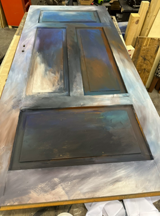

,,...aus den Angeln"
Zugunsten der Initiative SPIELLERNRAUM
Mit versteigerung am 28. November 2025 um 18.00Uhr
Roland Aldassnigg
,,ich möchte nie vollständig erwachsen werden"

Ingrid Dachler
,,Gänseblümchen"

Die beiden Turseiten sind als Holzschnitttafeln bearbeitet - die weisse und die braune Seite als Ying und Yang-Symbol stehen fur die Licht- und Schattenseiten des Lebens. Sie konnen mit Reinheit, Unschuld, Neuanfangen und Liebe in Verbindung gebracht werden. Auch Kindheit, Bescheidenheit und Freude kann assoziiert werden.
Ruth Gschwendtner-Wölfe

Die zwei Turflügel sind beidseitig bearbeitet: Blau-Weiss-Schattierungen verweisen auf Himmel, Raum, Offenheit. Oben die deutsche Ubersetzung des umseitig geschriebenen tibetischen Textes - Zitat des Buddha, der an 9 Beispielen die Vergänglichkeit beschreibt, die, wie alle zusammengesetzten Phänomene, veränderlich sind, und zwar in jedem Augenblick, er wird mit dem „64tel eines Fingerschnalzens“ definiert. Dieser alte Text verbirgt sich jeweils auf der Rückseite unter einer transparenten Stoffbahn, die sich leicht uber den Turtext spannt und mit Wolken und schwach sichtbaren Bergen bedruckt ist. Der tibetisch geschriebene Text ist nur vage zu erkennen.
Ruth Gschwendtner-Wölfe


Der Zugang zur Weisheit liegt hinter Wolken und Bergen. Wer die blattvergoldete Klinke aktiv in die Hand nimmt, der öffnet sich eine neue Welt. Der erste Schritt ist, den Wunsch zu entwickeln. Nur wem die Schuhe zu schwer sind, wird sich aus ihnen losen wollen, die Startrampe betreten, und eine Wandlung wagen ... Therapie braucht diesen Wunsch, braucht Mut, Entschlossenheit und Zeit, Schweres, Leidvolles loszulassen und eine neue leichte Dimension zu betreten. Möge die Übung gelingen!Startrampe: liegend - work in progress - erdverklumpte Bergstiefel mit zarten goldenen Ballettschuhen